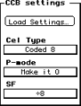

The CCB Settings region lets you specify the characteristics of a cel.

Figure 1: CCB settings region.
Load Settings
Lets you load previously saved CCB settings.
Cel Type
Lets you choose the cel type to which you want to convert your document.
Different cel types are discussed in detail in Introduction to 3DO Graphics
P-Mode
Lets you apply a P-Mode to the whole cel. This is useful, for example, if
you want to make the whole cel translucent or darker. An example is
provided in How to make an entire cel
translucent.